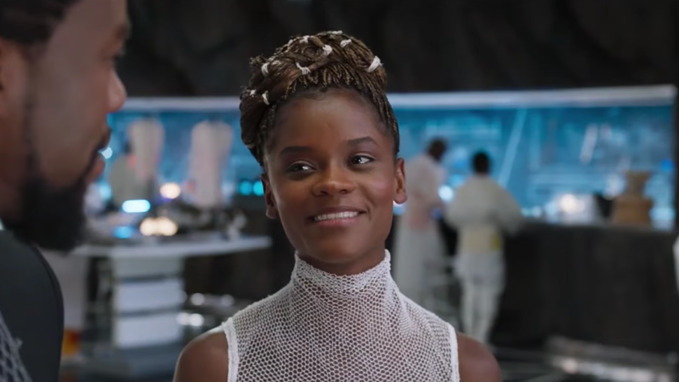

Letitia Wright sebagai Shuri, Memiliki salah satu pikiran paling cemerlang di dunia, saudara perempuan Black Panther, Putri Shuri, juga adalah kepala petugas sains untuk Wakanda, posisi yang sangat ia hargai lebih dari status kerajaannya. Shuri menyajikan T'Calla dengan penemuan baru yang dia buat untuknya, termasuk setelan Black Panther yang ditingkatkan.
Shuri adalah penemu jenius, menciptakan banyak senjata, peralatan dan perlengkapan untuk digunakan oleh Black Panther dan Prajurit Wakandan lainnya.
Ketika tersiar kabar di Wakanda bahwa Ulysses Klaue telah terlihat di Korea Selatan, Shuri memberi adik laki-lakinya peralatan baru untuk misinya, termasuk sepatu tersembunyi yang ia sebut "Sepatu" dan setelan Black Panther yang baru dan ditingkatkan yang mampu menyerap energi kinetik. dan kemudian mendistribusikannya kembali.
Sementara Shuri tidak menemani T'Challa, Nakia, dan Okoye ke Korea Selatan, setelah Klaue mencoba melarikan diri dari ketiganya, ia dapat bergabung dalam pengejaran dengan mengemudikan mobil dari jauh dari labnya di Wakanda. Dia membantu D'Challa secara khusus, yang menumpang kendaraan. Shuri akhirnya dikeluarkan dari pengejaran ketika mobil hancur.
T'Challa membawa Agen CIA Everett K. Ross kembali ke Wakanda setelah dia ditembak melindungi Nakia, dan Shuri dapat menggunakan ilmu pengetahuan Wakandan untuk menyembuhkannya dengan cepat. Ross, setelah bangun, terkejut mengetahui Wakanda sebenarnya adalah negara yang maju secara teknologi dan bukan negara berkembang yang ditiru, dengan Shuri menjelaskan pentingnya dan kontribusi vibranium bagi negara.
Segera setelah itu, Killmonger tiba di Wakanda, mengungkapkan dirinya sebagai sepupu T'Challa dan Shuri, dan menantang T'Challa untuk naik takhta. Selama persidangan dengan pertarungan yang diikuti, Shuri menyaksikan dengan ngeri saat T’Challa dikalahkan dan terlempar ke air terjun oleh Killmonger — mungkin sampai mati.